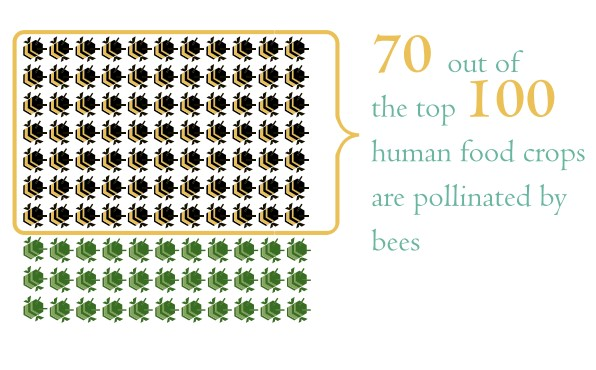

Why It Matters
Where is bee decline a problem?
Bee populations have been reportedly in decline in many Major countries, such as China, Brazil, North America, and many countires in Europe.4
Who is affected by the loss of bees
The decline in the bee population affects many different groups of people. It negatively impacts agricultural farmers, as bees are necessary for the polination of most fruits, and for the seed production of some vegetables and important hays. Without bees, these plants would not be able to grow, either because they need to be pollinated to grow, or they need to be pollinated to produce seeds (Brunet, Scienta.global).

The loss of alfalfa hay would impact the livestock industry greatly, as it is a common staple in feed for livestock such as cows and chickens (Brunet).1 Lastly, the loss of bees would affect the American population as a whole, as it would greatly change the american diet. Common fruits like apples, blueberries, strawberries, and avacados all rely on bee pollination. Vegetables like pumpkins, tomatoes, and cucumbers would also be effected. (DiValentino, Insider)2 According to Greenpeace.org, “Seventy out of the top 100 human food crops — which supply about 90 percent of the world’s nutrition — are pollinated by bees.” 3
